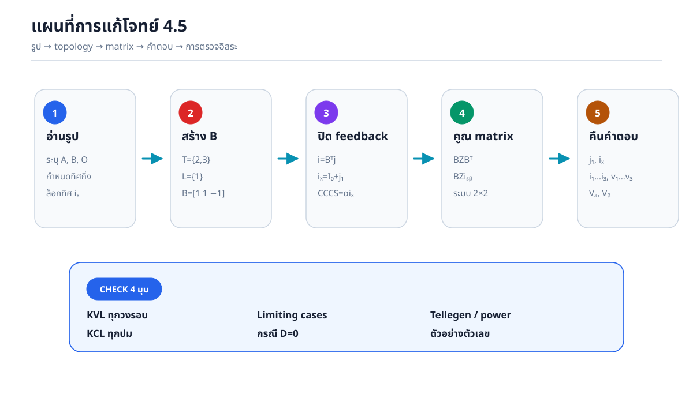
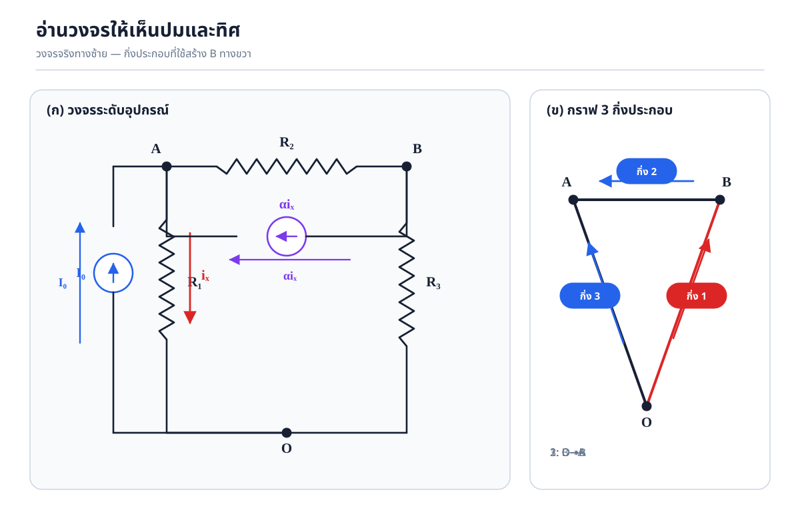
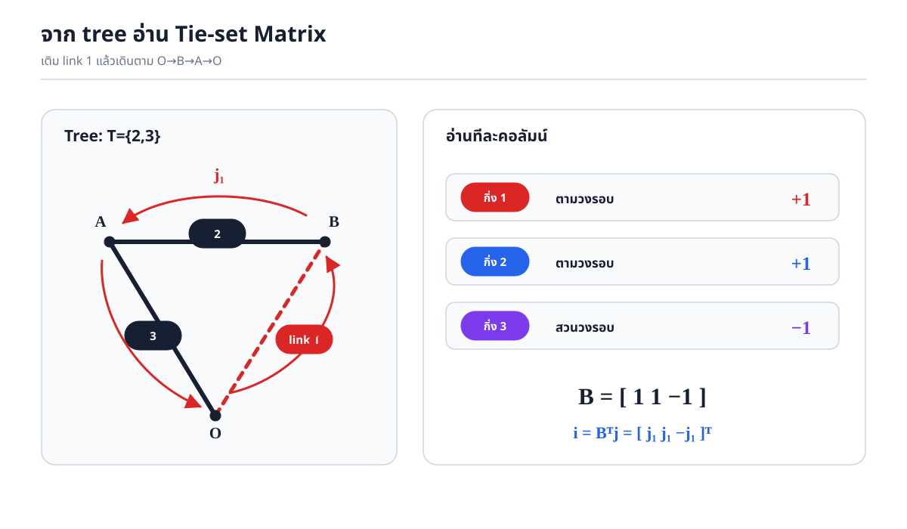
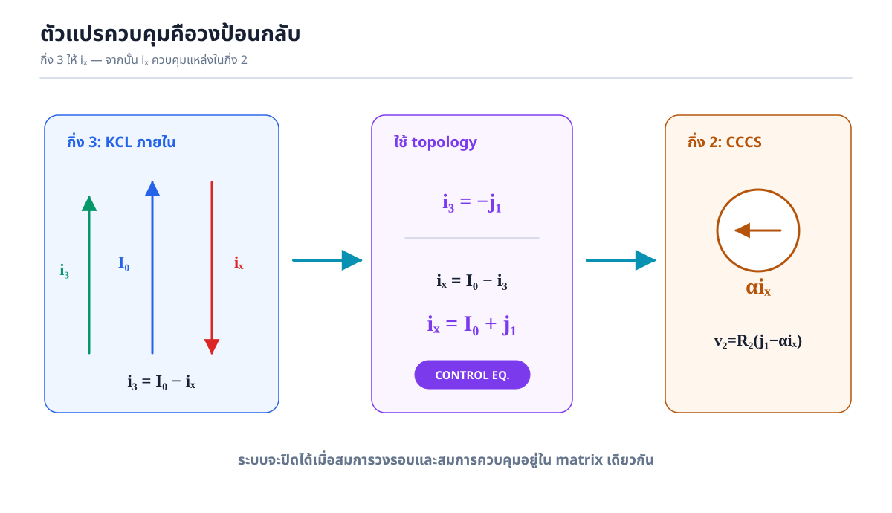
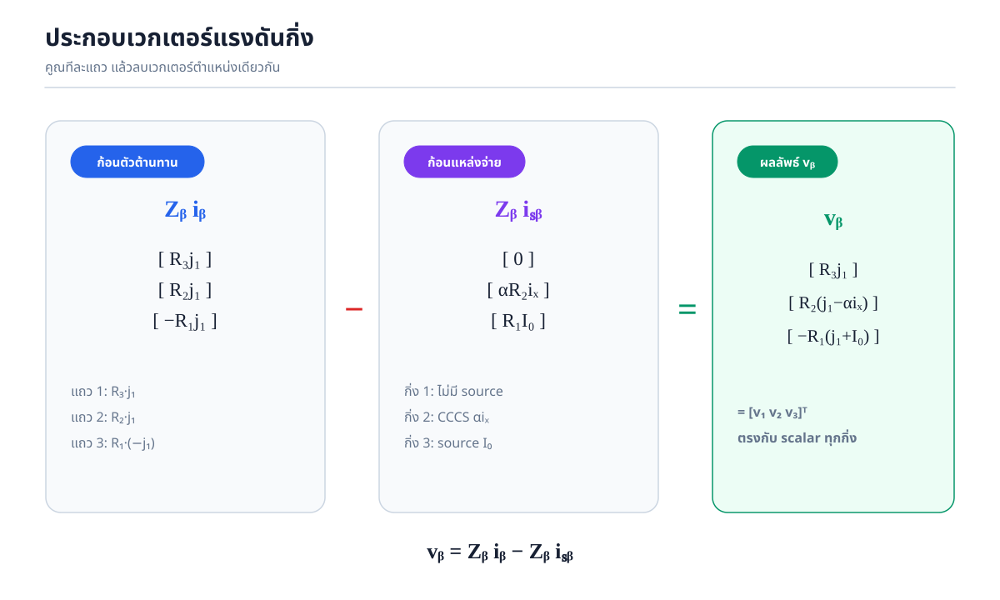
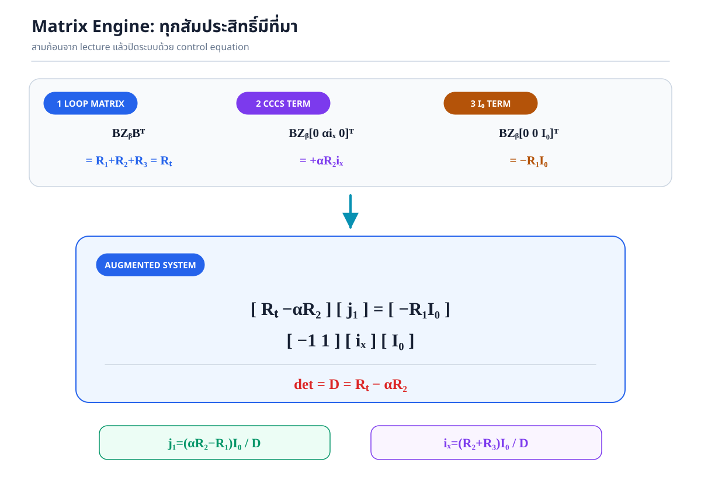
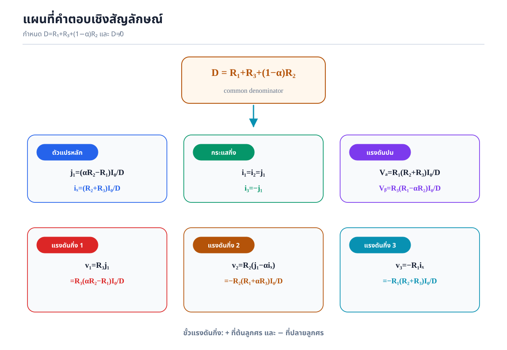
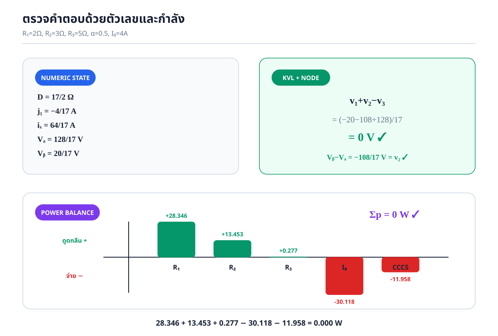

0. คำตอบและขอบเขตการใช้
ให้ \(R_T=R_1+R_2+R_3\) และ \(D=R_T-\alpha R_2=R_1+R_3+(1-\alpha)R_2\)
กระแสกิ่ง
\[ i_1=i_2=j_1,\qquad i_3=-j_1 \]แรงดันปม
\[ V_A=\frac{R_1(R_2+R_3)I_0}{D},\quad V_B=\frac{R_3(R_1-\alpha R_2)I_0}{D} \]
1. อ่านรูปวงจรโดยไม่ต้องจินตนาการ
กำหนดปมล่าง \(O\) เป็น datum และรวมอุปกรณ์ที่ต่ออยู่ระหว่างปมคู่เดียวกันเป็นกิ่งประกอบ
| กิ่ง | ทิศอ้างอิง | อุปกรณ์ | แรงดันกิ่ง |
|---|---|---|---|
| 1 | \(O\to B\) | \(R_3\) | \(v_1=V_O-V_B=-V_B\) |
| 2 | \(B\to A\) | \(R_2\parallel\alpha i_x\) | \(v_2=V_B-V_A\) |
| 3 | \(O\to A\) | \(R_1\parallel I_0\) | \(v_3=V_O-V_A=-V_A\) |

2. Tree, Link และ Fundamental Tie-set Matrix
โจทย์ให้ \(T=\{2,3\}\) และ \(L=\{1\}\) เมื่อ \(n=3,b=3\) จำนวนวงรอบหลักมูลคือ
\[ l=b-n+1=3-3+1=1. \]เติม link 1 และเดินตามทิศ link:
\[ O\xrightarrow{1}B\xrightarrow{2}A\xrightarrow{-3}O. \]ตามวงรอบ \(\Rightarrow+1\)
ตามวงรอบ \(\Rightarrow+1\)
สวนวงรอบ \(\Rightarrow-1\)

คูณ \(\mathbf i_b=\mathbf B^{\mathsf T}\mathbf j\) ทีละแถว
\[ \begin{bmatrix}i_1\\i_2\\i_3\end{bmatrix} =\begin{bmatrix}1\\1\\-1\end{bmatrix}[j_1] =\begin{bmatrix}(1)j_1\\(1)j_1\\(-1)j_1\end{bmatrix} =\boxed{\begin{bmatrix}j_1\\j_1\\-j_1\end{bmatrix}}. \]3. ตัวแปรควบคุม \(i_x\): สมการที่ปิด feedback
ที่กิ่ง 3, \(I_0\) ตรงกับทิศ \(i_3\) แต่ \(i_x\) สวนทิศ จึงต้องเขียน

4. สมการเฉพาะกิ่งแบบสเกลาร์และเมทริกซ์
กิ่ง 1
\[v_1=R_3i_1=R_3j_1\]กิ่ง 2
\[i_{R_2}=i_2-\alpha i_x\]\[v_2=R_2(j_1-\alpha i_x)\]กิ่ง 3
\[v_3=R_1(i_3-I_0)\]\[=-R_1(j_1+I_0)=-R_1i_x\]รูปเมทริกซ์ตามแม่แบบ Norton ใน lecture คือ
\[ \mathbf v_b=\mathbf Z_b\mathbf i_b-\mathbf Z_b\mathbf i_{sb}, \] \[ \mathbf Z_b=\begin{bmatrix}R_3&0&0\\0&R_2&0\\0&0&R_1\end{bmatrix}, \qquad \mathbf i_{sb}=\begin{bmatrix}0\\\alpha i_x\\I_0\end{bmatrix}. \]คูณเวกเตอร์ตัวต้านทาน
\[ \mathbf Z_b\mathbf i_b= \begin{bmatrix}R_3&0&0\\0&R_2&0\\0&0&R_1\end{bmatrix} \begin{bmatrix}j_1\\j_1\\-j_1\end{bmatrix} =\begin{bmatrix}R_3j_1\\R_2j_1\\-R_1j_1\end{bmatrix}. \]คูณเวกเตอร์แหล่งกระแส
\[ \mathbf Z_b\mathbf i_{sb}= \begin{bmatrix}R_3&0&0\\0&R_2&0\\0&0&R_1\end{bmatrix} \begin{bmatrix}0\\\alpha i_x\\I_0\end{bmatrix} =\begin{bmatrix}0\\\alpha R_2i_x\\R_1I_0\end{bmatrix}. \]ลบสมาชิกตำแหน่งเดียวกัน
\[ \boxed{\mathbf v_b= \begin{bmatrix} R_3j_1\\R_2(j_1-\alpha i_x)\\-R_1(j_1+I_0) \end{bmatrix}}. \]
5. Matrix Engine — คูณทุกก้อนทีละขั้น
เริ่มจาก KVL:
\[ \mathbf B\mathbf v_b=\mathbf0 \Rightarrow \boxed{\mathbf B\mathbf Z_b\mathbf B^{\mathsf T}\mathbf j =\mathbf B\mathbf Z_b\mathbf i_{sb}}. \]ก้อน 1: \(\mathbf Z_l=\mathbf B\mathbf Z_b\mathbf B^{\mathsf T}\)
ก้อน 2: \(\mathbf B\mathbf Z_b\mathbf i_{sb}\)
ประกบสองก้อน

6. ปิดระบบและแก้เมทริกซ์ \(2\times2\)
ประกบสมการวงรอบกับสมการควบคุม \(-j_1+i_x=I_0\):
Determinant
\[ D=\begin{vmatrix}R_T&-\alpha R_2\\-1&1\end{vmatrix} =R_T(1)-(-\alpha R_2)(-1) =\boxed{R_T-\alpha R_2}. \]Cramer’s rule สำหรับ \(j_1\)
\[ D_j=\begin{vmatrix}-R_1I_0&-\alpha R_2\\I_0&1\end{vmatrix} =-R_1I_0+\alpha R_2I_0 =(\alpha R_2-R_1)I_0, \] \[ \boxed{j_1=\frac{D_j}{D}=\frac{(\alpha R_2-R_1)I_0}{D}}. \]Cramer’s rule สำหรับ \(i_x\)
\[ D_x=\begin{vmatrix}R_T&-R_1I_0\\-1&I_0\end{vmatrix} =R_TI_0-R_1I_0=(R_2+R_3)I_0, \] \[ \boxed{i_x=\frac{D_x}{D}=\frac{(R_2+R_3)I_0}{D}}. \]7. คืนค่าทุกปริมาณ

| ปริมาณ | คำตอบ | ทิศ/ขั้ว |
|---|---|---|
| \(j_1\) | \(\dfrac{(\alpha R_2-R_1)I_0}{D}\) | \(O\to B\to A\to O\) |
| \(i_x\) | \(\dfrac{(R_2+R_3)I_0}{D}\) | ผ่าน \(R_1:A\to O\) |
| \(i_1=i_2\) | \(\dfrac{(\alpha R_2-R_1)I_0}{D}\) | \(O\to B\), \(B\to A\) |
| \(i_3\) | \(\dfrac{(R_1-\alpha R_2)I_0}{D}\) | \(O\to A\) |
| \(v_1\) | \(\dfrac{R_3(\alpha R_2-R_1)I_0}{D}\) | \(+O,-B\) |
| \(v_2\) | \(-\dfrac{R_2(R_1+\alpha R_3)I_0}{D}\) | \(+B,-A\) |
| \(v_3\) | \(-\dfrac{R_1(R_2+R_3)I_0}{D}\) | \(+O,-A\) |
| \(V_A\) | \(\dfrac{R_1(R_2+R_3)I_0}{D}\) | เทียบ \(O\) |
| \(V_B\) | \(\dfrac{R_3(R_1-\alpha R_2)I_0}{D}\) | เทียบ \(O\) |
8. ตรวจอิสระด้วย Node Analysis
ใช้ \(i_x=V_A/R_1\) และเขียน KCL ที่ \(A,B\) โดยไม่ใช้ \(\mathbf B\):
\[ \boxed{ \begin{bmatrix} \dfrac{1-\alpha}{R_1}+\dfrac1{R_2}&-\dfrac1{R_2}\\[5pt] \dfrac{\alpha}{R_1}-\dfrac1{R_2}&\dfrac1{R_2}+\dfrac1{R_3} \end{bmatrix} \begin{bmatrix}V_A\\V_B\end{bmatrix} =\begin{bmatrix}I_0\\0\end{bmatrix}}. \]determinant ของเมทริกซ์ปมลดรูปได้เป็น
\[ \Delta_N=\frac1{R_1R_2}+\frac{1-\alpha}{R_1R_3}+\frac1{R_2R_3} =\boxed{\frac{D}{R_1R_2R_3}}. \]Cramer’s rule ให้
\[ V_A=\boxed{\frac{R_1(R_2+R_3)I_0}{D}},\qquad V_B=\boxed{\frac{R_3(R_1-\alpha R_2)I_0}{D}}, \]ตรงกับ tie-set analysis โดยไม่ใช้กระแสวงรอบ จึงเป็นการตรวจอิสระจริง
9. ตรวจ KVL และ KCL ทุกปม
KVL
\[ \mathbf B\mathbf v_b=0 \Rightarrow v_1+v_2-v_3=0. \]แทนคำตอบแล้วตัวเศษคือ
\[ \alpha R_2R_3-R_1R_3-R_1R_2-\alpha R_2R_3+R_1R_2+R_1R_3=0. \]KCL ระดับกิ่ง
\[ B:\ -i_1+i_2=0, \] \[ O:\ i_1+i_3=0, \] \[ A:\ -i_2-i_3=0. \]KCL ระดับอุปกรณ์ที่ปม A
\[ \underbrace{I_0+\alpha i_x+(j_1-\alpha i_x)}_{\text{ไหลเข้า A}} =I_0+j_1=i_x =\underbrace{i_x}_{\text{ไหลออกผ่าน }R_1}. \]10. Limiting Cases และความหมายทางกายภาพ
| กรณี | ผลลิมิต | ความหมาย |
|---|---|---|
| \(\alpha\to0\) | \(j_1\to-R_1I_0/R_T\), \(i_x\to(R_2+R_3)I_0/R_T\) | CCCS ปิด เหลือ Norton ปกติ |
| \(I_0\to0,D\ne0\) | ทุกกระแสและแรงดัน \(\to0\) | dependent source ไม่มีตัวควบคุม |
| \(R_1\to\infty\) | \(j_1\to-I_0\), \(i_x\to0\) | กิ่งควบคุมเปิด; CCCS ปิด |
| \(R_3\to\infty\) | \(j_1\to0\), \(i_x\to I_0\) | กระแส R3 เป็นศูนย์ แต่แรงดันอาจไม่เป็นศูนย์ |
| \(\alpha=R_1/R_2\) | \(j_1=0\), \(i_x=I_0\) | จุดสมดุล; \(v_1=0\) |
| \(D=0\) | ระบบ singular | ต้องแยก \(I_0\ne0\) และ \(I_0=0\) |
11. Tellegen’s Theorem และดุลกำลัง
ใช้ passive sign convention:
\[ p_{R_1}=R_1i_x^2,\quad p_{R_2}=R_2(j_1-\alpha i_x)^2,\quad p_{R_3}=R_3j_1^2, \] \[ p_{I_0}=-R_1i_xI_0,\qquad p_{CCCS}=R_2(j_1-\alpha i_x)\alpha i_x. \]รวมแล้วใช้ \(i_x-I_0=j_1\):
\[ \sum p=j_1\left[R_3j_1+R_2(j_1-\alpha i_x)+R_1i_x\right]. \]วงเล็บคือ \(v_1+v_2-v_3=0\)
รูป topology ของ Tellegen ให้ผลเดียวกัน:
\[ \mathbf v_b^{\mathsf T}\mathbf i_b =\mathbf v_b^{\mathsf T}\mathbf B^{\mathsf T}\mathbf j =(\mathbf B\mathbf v_b)^{\mathsf T}\mathbf j=0. \]12. Numeric Lab — เปลี่ยนค่าแล้วตรวจทันที

13. จุดดักก่อนเข้าห้องสอบ
- อย่าใช้ \(i_x=i_3\); ที่ถูกคือ \(i_3=I_0-i_x\)
- อย่าแทน CCCS เป็น \(\alpha j_1\); ตัวควบคุมคือ \(i_x=I_0+j_1\)
- กิ่ง 3 สวนทิศวงรอบ จึงต้องได้สมาชิก \(-1\) ใน \(\mathbf B\)
- แม่แบบ Norton มีเครื่องหมายลบ: \(\mathbf v_b=\mathbf Z_b(\mathbf i_b-\mathbf i_{sb})\)
- สำหรับขั้วกิ่ง 3 ที่เลือก ต้องได้ \(v_3=-R_1i_x\)
- คำตอบติดลบหมายถึงทิศจริงสวนลูกศรสมมติ ไม่ใช่ข้อผิดพลาด
- ตรวจ \(D=0\) ก่อนหารเสมอ
14. ดัชนีเอกสารและแหล่งอ้างอิง
เอกสารอ้างอิงหลัก: เอกสารบรรยาย 303212 บทที่ 4; Hayt, Kemmerly & Durbin, Engineering Circuit Analysis; Balabanian & Bickart, Electrical Network Theory.